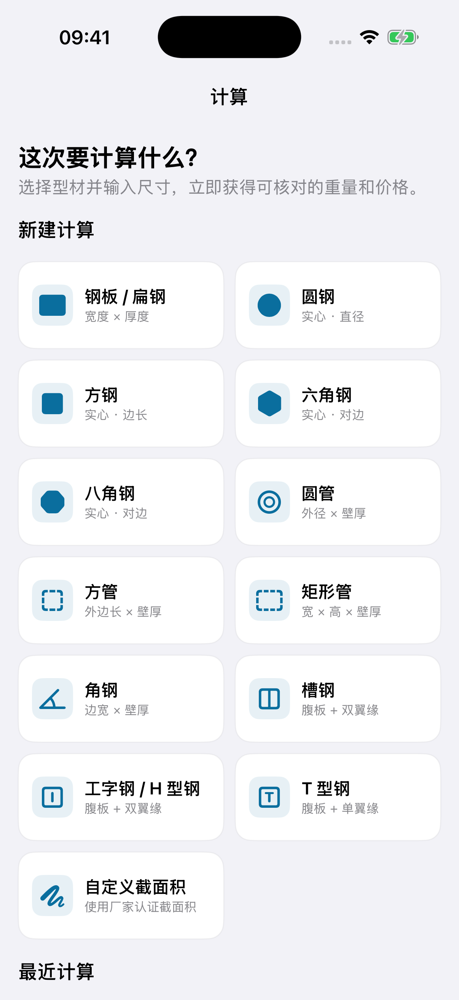
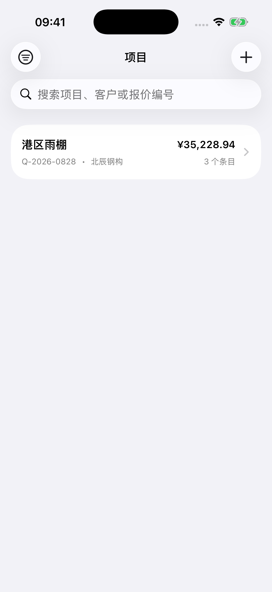

从钢材尺寸，到一份 PDF 报价
SteelFlow · 算重 / 计价 / 项目 / 报价输出
01选对型材
先选截面，再填尺寸

02核对重量
尺寸、材料与数量一起计算

03选择材料
查看典型密度，核对材料

04整理项目
按项目、客户或编号查找

05汇总报价
多种规格放到一张清单

06生成 PDF
预览后保存版本并分享

真实 App 页面 · 1.1.0 iPhone 模拟器采集，演示入口直接展示页面。
图中项目、客户及价格均为演示数据，不代表实际订单或实时行情。